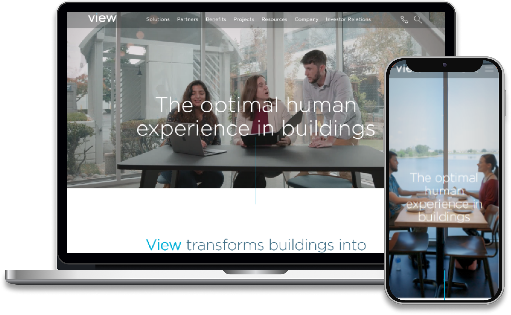

View. Inc is a leading technology company that offers innovative Smart Glass solutions for various industries. They approached Betasource for assistance in developing and implementing a successful IoT strategy. Betasource provided View. Inc with a comprehensive range of IoT services, including IoT development, real-time problem fixing, software testing, maintenance and support, and 24/7 hour support. The following case study outlines how Betasource helped View.inc implement a successful IoT strategy.
-

Technologies
IOT
-

Built for
Web, Mobile & Tablets
-

Industry
Smart windows Provider
-

Country
United States
-

